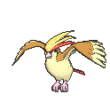

-
Bulbasaur #001

- Grama
- Veneno
Há uma semente de planta em suas costas desde o dia que este Pókemon nasce. A semente Cresce lentamente.
-
Ivysaur #002

- Grama
- Veneno
Quando o bulbo nas suas costas cresce, parece perder a capacidade de ficar em pé.
-
Venusaur #003

- Grama
- Veneno
Sua planta floresce quando está absorvendo energia solar. Ele permanece em movimento para buscar a luz solar.
-
charmander #004

- Fogo
Tem preferência por coisas quentes. Quando chove, diz-se que o vapor jorra da ponta de sua cauda.
-
Charmeleon #005

- Fogo
Tem uma natureza bárbara. Na batalha, ele chicoteia sua cauda ardente e corta com garras afiadas.
-
Charizard #006

- Fogo
- Dragao
Ele cospe fogo que é quente o suficiente para derreter pedregulhos. Pode causar incêndios florestais soprando chamas.
-
Squirtle #007

- Agua
Quando ele retrai seu longo pescoço em sua concha, ele esguicha água com força vigorosa.
-
Wartotle #008

- Agua
É reconhecido como um símbolo de longevidade. Se sua concha tem algas, esse Wartortle é muito antigo.
-
Blastoise #009

- Agua
Ele esmaga seu inimigo sob seu corpo pesado para causar desmaios. Em uma pitada, ele se retirará dentro de sua concha.
-
Cartepie #010

- Inseto
Para proteção, ele libera um fedor horrível da antena em sua cabeça para afastar os inimigos.
-
Metapod #011

- Inseto
É esperar o momento para evoluir. Nesta fase, ele só pode endurecer, por isso permanece imóvel para evitar o ataque.
-
Buterfree #012

- Inseto
- Voador
Em batalha, ele bate as asas em grande velocidade para liberar poeira altamente tóxica no ar.
-
Weedle #013

- Inseto
- veneno
Cuidado com o ferrão afiado na cabeça. Esconde-se na grama e nos arbustos onde come folhas.
-
Kakuna #014

- Inseto
- Veneno
Capaz de se mover apenas ligeiramente. Quando ameaçado, pode espetar seu ferrão e envenenar seu inimigo.
-
Beedrill #015

- Inseto
- Veneno
Tem três ferrões venenosos nas patas dianteiras e na cauda. Eles são usados para atacar seu inimigo repetidamente.
-
Pidgey #016

- Normal
- Voador
Muito dócil. Se atacado, muitas vezes chuta areia para se proteger em vez de revidar.
-
Pidgeotto #017

- Normal
- Voador
Este Pokémon é cheio de vitalidade. Ele voa constantemente ao redor de seu grande território em busca de presas.
-
Pidgeot #018
- Normal
- Voador
Este Pokémon voa na velocidade de Mach 2, procurando presas. Suas grandes garras são temidas como armas perversas.
-
Rattata #019

- Normal
Vai mastigar qualquer coisa com suas presas. Se você vir um, pode ter certeza de que mais 40 moram na área.
-
Raticate #020

- Normal
Suas patas traseiras são de teia. Eles atuam como nadadeiras, para que possa nadar em rios e caçar presas.
-
Electabuzz #125

- Elétrico
Muitas usinas de energia mantêm Pokémon do tipo Ground por perto como uma defesa contra Electabuzz que vêm em busca de eletricidade.
-
Haunter #093

- Fantasma
Gosta de espreitar no escuro e bater ombros com uma mão gasosa. Seu toque causa estremecimento sem fim.
-
Hitmonlee #106

- Lutador
Este Pokémon incrível tem um incrível senso de equilíbrio. Pode chutar em sucessão de qualquer posição.
-
Hitmonchan #107

- Lutador
Seus socos cortam o ar. Eles são lançados em alta velocidade, até mesmo um leve arranhão pode causar uma queimadura.
-
Mr. Mime #121

- Psíquico
A amplitude de suas mãos pode não ser coincidência – muitos cientistas acreditam que suas palmas se tornaram ampliadas especificamente para pantomima.
-
Articuno #144

- Gelo
- Voador
Diz-se que as belas asas azuis deste Pokémon são feitas de gelo. Articuno voa sobre montanhas nevadas, sua longa cauda voando atrás dela.
-
Zapdos #145

- Elétrico
- Voador
Este Pokémon tem controle total sobre a eletricidade. Há histórias de Zapdos nidificando nas profundezas escuras de nuvens de trovões negros.
-
Moltres #146

- Fogo
- Voador
É um dos lendários Pokémon pássaros. Quando Moltres bate suas asas flamejantes, elas brilham com um brilho vermelho deslumbrante.
-
Mewtwo #150

- Psíquico
- Lendário
Seu DNA é quase o mesmo de Mew. No entanto, seu tamanho e disposição são muito diferentes.
-
Mew #151

- Psíquico
- Lendário
Mew é o Pokémon lendário que estava extinto e que tem a capacidade de aprender todas as habilidades de todos os Pokémons existentes.